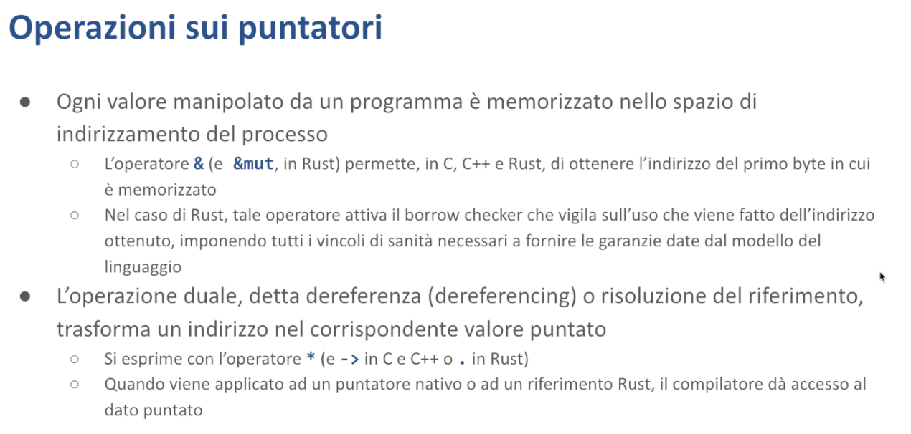

Smart Pointer - Malnati 20-21
Indice
- 1. Introduzione
- 2. Smart pointer in Rust
- 3. Smart pointer e metodi
- 4. Tabella riassuntiva
- 5. Riferimenti
1. Introduzione
L'argomento che adesso introduciamo è un po’ più complesso — non è complessissimo, ma in realtà ha alcune caratteristiche che rendono la programmazione in C++ (dove per primo è stato introdotto) e in Rust particolarmente diverso da quello che succede altrove. Ed è alla base di moltissimi dei comportamenti che ci interessano, perché danno una correttezza semantica alle operazioni che andiamo a svolgere, lasciandoci la libertà di poter usare il concetto di puntatore in tutte le situazioni in cui ci serve.
Vediamo di capire di cosa stiamo parlando.

Noi sappiamo che i dati su cui lavoriamo sono memorizzati nel contesto dello spazio di indirizzamento del nostro processo. In generale noi possiamo fare riferimento a questi dati se sono posseduti direttamente dalle variabili che li posseggono. Alternativamente abbiamo un modo efficiente in Rust, che è quello dell'uso dei reference o dei refmut, per poter accedere a un dato di cui non abbiamo il possesso, ma di cui otteniamo temporaneamente la possibilità di leggere o di scrivere.
Tuttavia, questo vale in Rust, vale in C, vale in C++. A differenza di quello che succede in C e C++, dove è sempre possibile recuperare il puntatore a un valore, anche quando quel valore potenzialmente non esiste più e così via, dando origine a una serie di problemi, in Rust abbiamo che il borrow checker ci garantisce che noi possiamo dereferenziare un riferimento solo quando lui è in grado di dimostrare logicamente (quindi attraverso un processo logico-matematico) che non c'è rischio ad accedere a quel particolare riferimento.
Questa è la ragione principale della salvezza, nel senso che ci garantisce una correttezza di accessi e ci elimina tutti quei vari casi di undefined behavior che nascono nell'utilizzo del C e del C++.
Tuttavia, in alcuni casi, questo restringimento, questa forma di restrizione operata dal borrow checker, può essere più stringente di quello che noi vorremmo.
Perché? Perché ci sono casi leciti in cui, a seguito di una serie di cose che il compilatore non riesce a dimostrare per i fatti suoi, noi potremmo comunque dereferenziare certi valori, ma lui non capisce e quindi ce lo proibirebbe.
In generale, noi sappiamo che se disponiamo di un puntatore, noi possiamo eseguire l'operazione chiamata dereferenza, o risoluzione del riferimento, applicandogli un asterisco. L'operatore asterisco applicato di fronte a un puntatore ci permette di accedere al contenuto della o delle celle, a cui quel puntatore fa riferimento.
Nel caso di Rust si usa asterisco e basta, nel caso del C o del C++, a secondo della sintassi usiamo * oppure ->. Freccia è un modo condensato per dire “dereferenza e offset”.
Asterisco sostanzialmente si usa nel contesto di un campo, per cui p->b, se b è un campo all'interno di una certa struttura allora si trova ad un certo offset dal suo inizio, per cui p->b è uguale a *p + offest_di_b .

Tipicamente, se noi usiamo l'operatore asterisco nei confronti di un dato che è un puntatore, il compilatore fa per noi questo lavoro, generando l'istruzione assembler corrispondente a fare questo tipo di cosa. Tuttavia, sia in Rust sia in C++, noi abbiamo la possibilità di insegnare al compilatore che ci sono degli altri tipi che non sono di natura loro puntatori — sono tipi, che però noi vogliamo far sembrare puntatori.
Notate che questo meccanismo l'abbiamo già scoperto con le funzioni. Gli oggetti funzionali in C++ sono cose che non sono funzioni, ma siccome definiscono operator(), li possiamo usare come funzioni, con una serie di vantaggi aggiunti, perché avendo dei campi, all'interno di questi campi io posso conservare uno stato e quindi quelle funzioni che implementano si ricordano di quello che è capitato.
La stessa tecnica la posso utilizzare con i puntatori. Facendo overload, nel caso del C++, dell'operatore asterisco e dell'operatore freccia, che sono solo due variazioni sintattiche dello stesso concetto, io ho la possibilità di insegnare al compilatore che un certo mio dato si comporta sintatticamente come si comporterebbe un puntatore, ma dal punto di vista semantico può fare delle cose in più che un puntatore semplice non sarebbe in grado di fare.
E queste cose in più che mi possono dare sono, ad esempio, la garanzia di inizializzazione o di rilascio. Quando io ho una variabile in C, di tipo int*, non posso dire se è stata inizializzata, posso guardare se è uguale a null o a zero, ma supponendo che contenga un numero diverso da zero, io non so dire se quel numero diverso da zero è un indirizzo valido o è semplicemente del garbage, della spazzatura che è rimasta dentro perché nessuno gli ha attribuito qualche cosa.
Viceversa, uno smart pointer, un oggetto che si veste da puntatore, può garantirmi questo, ad esempio attraverso il fatto che io lo posso solo costruire attraverso un suo costruttore o una sua funzione di inizializzazione e questa si prende la briga di metterci dentro delle cose sensate. Così come posso garantire il rilascio, proprio perché quella struttura lì potrà avere un distruttore e di conseguenza il distruttore può prendersi la briga di garantirmi che il rilascio viene fatto.
Oppure potrei implementare delle politiche più sofisticate, come quelle di conteggio dei riferimenti che adesso vediamo. Oppure potrebbe garantirmi l'accesso condiviso da più parti ma mutuamente esclusivo nel tempo, ovvero io posso avere due o più che vogliono usare questo puntatore ma mai insieme, perché? Perché se cercassero di farlo insieme uno dei due sarebbe obbligato ad aspettare e passerebbe prima l'altro e solo quando l'altro avesse finito, allora chi si presenta dopo potrebbe entrare.
Quindi esistono diversi comportamenti possibili quando una struttura dati, oltre all'indirizzo di memoria (che è semplicemente un numero a 32 o 64 bit, a seconda dell'architettura), contiene anche altre informazioni. Queste informazioni aggiuntive vengono utilizzate per modificare il comportamento della struttura quando si comporta come puntatore.
Ragionando su queste cose qui, ad un certo punto nella storia del C++ è nata l'idea degli smart pointer. Rust l'ha fatta sua profondamente e ai tre smart pointer presenti nel C++ moderno ne ha aggiunti una serie che oggi vogliamo scoprire. Questi smart pointer sono utilissimi perché ci risolvono una serie di problemi. Va detto che nel C++ moderno c'è una delle regole fondamentali è proprio quella di dire “non usare mai puntatori nativi ma usa solo smart pointer, che sono gli unici che ti danno garanzia”.
Rust prende una strada più diretta: non espone i puntatori normali (accessibili solo in modalità unsafe) e offre invece i reference e i refmut. Questi sono garantiti corretti grazie a un uso limitato ai casi dimostrabili dal compilatore. In alternativa, Rust fornisce gli smart pointer che risolvono quelle situazioni dove i reference semplici non basterebbero, mantenendo comunque la correttezza dell'algoritmo.

Perché ci interessano i puntatori? I puntatori ci interessano assolutamente perché se non avessimo i puntatori, certe strutture dati non le potremmo implementare in nessun modo. Una linked list non può esistere senza i puntatori, ma anche una hash map non riesce a esistere senza puntatori, e tante altre… Un grafo non lo posso rappresentare senza i puntatori perché il grafo è fatto di vertici e archi, e l'arco è proprio il puntatore che va da un vertice a un altro vertice.
Allora, i puntatori sono quindi potentissimi e sono alla base della maggior parte degli algoritmi che noi andiamo a utilizzare, però noi abbiamo abbondantemente detto e ripetuto che l'abuso dei puntatori è la fonte principale di disastro dei programmi e quindi dobbiamo trovare un modo plausibile di gestirlo.
Vediamo di introdurre prima nel C++ perché è più semplice e in qualche modo risponde a una storia anche che ci spiega perché sono nate alcune cose e poi ritroviamo questi concetti dall'altra parte in Rust.
1.1 Smart pointer in C++

Il C++ fin dalle origini aveva un'idea, un oggetto strano nella sua libreria che si chiamava std::auto_ptr. È stato l'embrione della storia degli smart pointer ma auto_ptr soffriva di un problema enorme. Quando voi lo copiavate faceva delle cose strampalate che uno non si aspettava a fronte di una copia. Per questo motivo, cose che avevano la loro razionalità ma erano sufficientemente strane da mettere in motivo, quando nel 2011 è uscito il C++ moderno, contestualmente si è detto auto_ptr è bannato, e sono stati piuttosto introdotti tre oggetti che si chiamano unique_ptr, shared_ptr e weak_ptr che sono invece congruenti tra di loro, hanno una semantica sensata e ci danno una serie di garanzie.
1.1.1 unique_ptr
Il primo, unique_ptr, dice “io sono un puntatore che non può essere copiato”, esiste in un'unica copia. Questo non è molto diverso dai refmut, il refmut esiste in un'unica copia, tu lo puoi cedere a un altro perdendolo tu. Io non posso avere lo stesso refmut salvato in due variabili diverse.
unique_ptr ha la stessa caratteristica, proprio come refmut è un puntatore, cioè se io vado a guardare quanto spazio consuma, consuma 4 byte sull'architettura 32 bit, 8 byte sull'architettura a 64, ma il compilatore del C++, proprio come fa Rust con il refmut, si fa garante che non venga copiato.
Piccolo problema, in Rust naturalmente l'assegnazione è un movimento, per cui quando io faccio a = b, a meno che la struttura dati goda del tratto Copy, a = b vuol dire prendi quello che c'è dentro b, copialo dentro a, ma b non è più accessibile.
In C++ il concetto di movimento esiste, ma è esplicito. Allora, io non posso in C++ scrivere con unique_ptr ptr1 = ptr2, perché il compilatore me lo blocca, ma devo scrivere ptr1 = std::move(ptr2), cioè devo in modo esplicito dire “muovimelo”.
Muovimelo esattamente come succede in Rust, non è nient'altro che “copialo e rendi l'originale inadeguato”.
Il modo che il C++ ha per rendere l'originale inadeguato, siccome non ha tutti i controlli del compilatore di Rust, è metterci un null dentro. Quindi quello lì perde il suo riferimento alla memoria e lo cede a quell'altro.
unique_ptr è un oggetto che può essere costruito in due modi:
- con l'operatore
new, come tutti gli oggetti del C++, a partire da un puntatore semplice di cui prende il possesso - tramite una funzione di creazione
make_unique(std::make_unique), simile a quello che succede in Rust quando scriviamostruct::new
La funzione alloca sullo heap un blocco grande quanto serve, di cui l’oggetto è il possessore. Se verrà passato come parametro, dovrà cedere questo possesso usando std::move per indicare esplicitamente il trasferimento, diventando nullo.
Quindi unique_ptr, come dice il nome, è un puntatore che è posseduto in un posto solo. Quando esce di scope, viene chiamato il suo distruttore che rilascia la memoria allocata, garantendo il rilascio. Fa overload di operator* e operator->, permettendo di usarlo come un normale puntatore, ma con garanzie aggiuntive. Non potendo essere copiato, ce n'è uno e uno solo — al massimo può essere ceduto.
1.1.2 shared_ptr
In molte situazioni questo va benissimo. Ci sono casi però in cui serve che più riferimenti puntino allo stesso dato. Pensate a un grafo: un nodo deve poter essere, ad esempio, punto di arrivo di due archi diversi. Con unique_ptr questo non sarebbe possibile, perché un nodo conosciuto da un puntatore non potrebbe essere conosciuto da un altro.
Per questo è stata introdotta la seconda struttura: lo shared_ptr. È più complessa perché è "fat", proprio come in Rust. Gli slice e gli oggetti tratto in Rust sono "fat" — sembrano puntatori ma sono doppi: gli slice contengono puntatore e size, gli oggetti tratto contengono due puntatori.
Uno shared_ptr è un puntatore doppio:
- Da un lato punta al dato
- Dall'altro punta a una struttura di controllo contenente un contatore
Alla costruzione, vengono allocati dato e struttura di controllo, inizializzando il contatore a 1. Quando lo shared_ptr viene copiato (ptr1 = ptr2), si creano due puntatori che puntano agli stessi elementi, incrementando il contatore da 1 a 2. Per questo si chiama "shared" - è condiviso e tiene traccia delle condivisioni.
Nel momento in cui uno di questi due shared pointer dovesse morire, perché raggiunge la fine del suo scope, passa al suo distruttore, e il distruttore che cosa fa? Va sulla struttura di controllo e decrementa, quindi da 2 scende a 1. Siccome il risultato non è 0, dice “ok, io ho decrementato, non c’è altro da fare”.
Quando anche quell'altro morirà, anche lui andrà sulla struttura di controllo, decrementerà (e da 1 diventa 0), e vedendo che il risultato è 0 dice, “ah, ma questa cosa è finita, ero l'ultimo che la conosceva, quindi dealloco anche la memoria”. Quindi uso la prima parte del puntatore per liberare la memoria.
In questo modo possiamo essere abbastanza sicuri che anche con 50 puntatori che fanno riferimento allo stesso dato, il contatore sarà 50. I puntatori possono essere distrutti in qualsiasi ordine — non ha importanza, poiché ognuno decrementando il contatore fa la sua parte. Quando l'ultimo viene deallocato, il contatore arriva a 0 e solo allora il blocco di memoria viene liberato.
In questa maniera io ho la certezza che quella memoria non diventerà mai dangling, cioè il puntatore che ho a quel blocco di memoria non sarà mai dangling, perché finché c'è almeno uno che lo conosce vado bene.
Creazione degli shared_ptr
Anche questi, il modo preferenziale è attraverso la funzione make_shared — è una funzione base, quindi non è il metodo di un oggetto, ma è una funzione e basta che prende i parametri con cui voglio creare un oggetto, alloca questo oggetto sullo heap, passando al suo costruttore i parametri che diamo a make_shared.
È una funzione generica e quindi ci dà la possibilità di specificare come andiamo a inizializzarla.
1.1.3 Dettagli implementativi di unique_ptr

Quindi di per sé unique pointer è banalissimo: è implementato di fatto come puntatore semplice. L'unica vera faccenda è che non può essere copiato. Siccome è stato definito come deleted l'operatore uguale, se io cercassi di assegnarlo a un altro puntatore o di passarlo come parametro, il compilatore mi blocca con un errore, non si può fare.
Al contrario, è presente l'implementazione dell'operatore di assegnazione per movimento, che nella sintassi del C++ si esprime come operator=(value reference && T).
Cosa accade durante il movimento? Il dato della sorgente viene copiato nella destinazione — in pratica, "quel puntatore che aveva lei ora lo prendo io" — mentre nella sorgente viene scritto null.
Questo era la base del comportamento di auto_ptr, solo che in auto_ptr, nel C++ che precedeva la versione 11, il concetto di movimento non c'era, e quindi lì c'era un'assegnazione che modificava l'originale, che è un casino.
Nel movimento invece questo è ovvio, io muovo proprio perché mi prendo i suoi dati e lascio il vuoto dall'altra parte.
In Rust non c'è la responsabilità di riempire il buco, perché Rust si fa garante che quello da cui ho mosso non potrà più essere acceduto, cioè se io provo ad andarci a leggere dentro, il borrow checker mi blocca, dice "no, qui non puoi toccare, perché quello ormai l'hai mosso". E quindi chi se ne frega che sia rimasta spazzatura lì dentro. In C++ questa capacità del compilatore non c'è e di conseguenza occorre garantire che io lascio l'originale pulito mettendoci dentro un null.
Il distruttore di unique_ptr si occupa di rilasciare il blocco che vive sull’heap.
Vediamo un esempio.
1.1.4 Esempio unique_ptr

Qui abbiamo un blocco dove dichiaro un puntatore p di tipo std::unique_ptr, e lo inizializzo con make_unique di 5.
Cosa succede?
Il momento in cui eseguo questa cosa qua, p esiste sullo stack, l'esecuzione di make_unique va sull'heap, alloca un blocco grande quanto mi serve per tenere un intero (32 bit), ci mette dentro 5, prende il puntatore, e lo salva dentro p.

Più avanti dico int i = *p, quindi accedo a p come un puntatore normalissimo, bene, prendo quel 5 che stava sull'heap, lo copio dentro la variabile i che sta sullo stack, questo non mi dà nessun fastidio.

Posso scriverci *p = 7, benissimo. Uso p come puntatore, vado nella zona in cui punta, cambio il suo contenuto, ci metto 7, e va benissimo.

Chiusa graffa.
Chiusa graffa comporta la contrazione dello stack. i va via, senza side effect, p va via, ma prima di andar via chiama il distruttore.
Cosa fa il distruttore? Rilascia.
E quindi l’heap resta pulito. Se quella cosa lì invece di essere un make_unique fosse stato un int*, il codice andava ancora bene perfettamente, ma l'effetto sarebbe stato che senza un'esplicita delete io sarei arrivato al chiusa graffa e nell'heap mi restava il 7, che invece usando unique_ptr è andato via.
Quindi unique_ptr mi dà questa garanzia, che è molto comoda. Non ho bisogno di ricordarmi.
Se per caso invece di buttare via p l'avessi ritornato, se quindi questa funzione avesse fatto return p, cosa sarebbe successo?
Beh il mio p locale veniva mosso nel valore di ritorno, quindi dentro il mio p ci finiva un null e il distruttore non avrebbe fatto niente, ma la copia del puntatore era nel valore di ritorno che quindi restava vivo, chi lo riceveva ci faceva delle cose e quando chi l'avesse ricevuto fosse morto, fosse uscito dal suo scope, l'avrebbe automaticamente rilasciato.
Cioè non c'è rischio con unique_ptr che quella memoria lì non venga rilasciata.
E parimenti, se io ho fatto bene le cose, ho inizializzato il mio unique_ptr, contiene un dato e posso dereferenziarlo.
1.1.5 Dettagli implementativi di shared_ptr

shared_ptr, come dicevamo prima, è fat.
Mentre uno unique_ptr a tutti gli effetti è proprio solo un puntatore, uno shared_ptr è una struttura un po' più grossa, che si usa come un puntatore (quindi con asterisco, o con freccia), ma dentro di sé ha due puntatori:
- ha il dato, che può essere grande a piacere
- ha la struttura di controllo
La struttura di controllo in realtà è un pelino più complessa di come accennato prima. Cioè non contiene soltanto il conteggio dei riferimenti.
Perché?
Perché il sistema del conteggio dei riferimenti ha un buco logico gravissimo. Immaginate di aver creato una semplicissima LinkedList (una lista doppiamente collegata), di quelle dove ciascun elemento punta in avanti e punta all'indietro.
Inizialmente la vostra LinkedList contiene un solo elemento, quindi il suo puntatore in avanti è null, il suo puntatore all'indietro è null. E questo elemento qui è puntato dall'oggetto che conosce la lista.
A un certo punto, su questa lista aggiungete qualcosa, mettiamolo al fondo, ma non cambierebbe nulla.
Cosa succede?
Adesso il punto d'inizio è conosciuto dalla vostra variabilina che conosce l'inizio, dentro di sé avrebbe il back sempre a null, e il next al nuovo elemento che avete aggiunto.
Ma il nuovo elemento che avete aggiunto punterebbe anche all'indietro, a quello che c'era già prima, che a questo punto avrebbe due riferimenti:
- la lista stessa che gli dice "inizi qua"
- l'elemento che segue che punta all'indietro
L'elemento che viene dopo avrebbe un next null.
Quindi il primo elemento ha un contatore pari a 2 e il secondo elemento ha un contatore pari a 1.
Ora, la testa della lista esce di scope. Cosa succede? Lo smart pointer che punterebbe al primo degli elementi va sul blocco di controllo e lo decrementa, scende a 1. La testa della lista viene tolta dai piedi, ma il primo elemento non viene comunque dellocato, perché vale 1 il contatore. Il problema è che andando via la testa adesso mi ritrovo in una situazione in cui il primo elemento punta al secondo e lo tiene in vita, il secondo elemento punta al primo e lo tiene in vita, ma più nessuno conosce nel primo e nel secondo. Ho fatto un buco nero. E' un buco nero piccolino perché ci sono solo due cose, ma quella memoria lì non la libererà mai più nessuno. Non c'è modo di liberarla.
Se per caso invece di essere una lista di due fosse stata una lista di 20.000 elementi, ciascuno teneva in vita quello successivo e viceversa, perché tutti si conoscono a coppie. Ma nessuno sa più dove sono, e quindi io ho perso in un colpo solo una cosa enorme.
Quindi il concetto di shared_ptr è molto bello, fin tanto che non ho dei cicli.
La difficoltà della lista è che, avendo il puntatore in avanti e anche all'indietro, crea dei cicli. Le strutture cicliche tendono a tenersi, con l'uso dei contatori e del conteggio dei riferimenti, si tengono in vita. Non c'è modo di liberarle. Bisogna spaccare questo ciclo.
Per questo motivo c'è un terzo tipo di puntatore che si chiama weak_ptr, che serve a chiudere i cicli, cioè a evitare che queste cose qua restino vive per l'eternità.
Per questo motivo il blocco di controllo è un pochino più sofisticato. All'interno del blocco di controllo ci sono tre cose:
- il contatore dei riferimenti hard
Quanti altri
shared_ptrconoscono il dato condiviso? - il contatore dei riferimenti weak
Quanti
weak_ptrconoscono il dato condiviso e chiudono eventuali cicli? - il puntatore al dato condiviso Serve per poter rilasciare le cose nel momento giusto
Solo quando entrambi i due contatori scenderanno a zero, il contatore hard e il contatore weak, il blocco di controllo sarà liberabile.
Vediamo com'è fatta questa cosa.
1.1.6 Esempio shared_ptr

Io qui sto creando uno shared_ptr p.
Vedete che lo shared_ptr p è un oggetto che sta sullo stack, in questo caso punta al dato che è 5. L'oggetto p dentro di sé è fat, ha due pezzi: un primo puntatore al blocco di controllo che è fatto di tre caselline, e un secondo pezzo che è il puntatore al dato vero e proprio, che contiene in questo caso il numero 5.
Inizialmente il blocco di controllo è fatto così: dice c'è un contatore hard, io so che c'è uno shared_ptr che conosce questo dato, è l'unico che ho messo. Zero weak, non c'è nessun altro, non c'è nessun weak_ptr che mi chiude eventuali cicli, benissimo. E dentro il blocco di controllo mi tengo anche il puntatore al dato stesso, che in questo caso è 5.

Cosa succede nel momento in cui creo un secondo smart pointer?
auto è un modo che il C++ mi dà per fare la type inference, dice “capisci da solo il tipo a partire da quello che ti metto dentro”.
Quindi q è un altro shared_ptr di int.
In quanto altro shared_ptr di int è anche lui una cosa grossa, due singoli puntatori, che condividono il puntare sia al blocco di controllo sia il puntare al dato.
Dentro q, guardando il lato del dato finisco sul numero 5, guardando il lato del blocco di controllo finisco sulla stessa struttura di controllo di prima.
Solo che nel momento in cui ho fatto q = p non ho solo duplicato i puntatori alle due parti, nel blocco di controllo ho incrementato il conteggio. Adesso ho due hard link e zero weak link.

Usando q accedo al dato puntato e lo cambio: *q = 3. Questo è lecito, quindi uso q come puntatore, lo seguo, vado nella zona del dato e questo mi dice "butta via quello che c'era prima, il 5, cambialo con 3" — perfetto. Il blocco di controllo in questa operazione qua non ha nessun effetto.
Questo è scritto dentro un'aperta graffa che mi riduce il tempo di vita di q fino alla chiusa graffa corrispondente.

Quando arrivo alla chiusa graffa corrispondente cosa succede? Beh, che quel q lì esce di scope, viene distrutto, quindi deve contrarsi lo stack. Ma prima che lo stack possa contrarsi, gira il suo distruttore.
Cosa fa il distruttore dello shared_ptr?
Così come durante la costruzione ha incrementato il contatore, così al momento della distruzione lo decrementa. Se il risultato non è zero, finisce lì
E in effetti il risultato non è zero, era 2 ed è sceso a 1.

p continua a avere accesso, quindi posso usare p: *p = 7. Vado, seguo il ramo del dato, vado su quella casella lì, ci scrivo 7 — nessun problema.

E poi arrivo alla chiusa graffa finale.
Cosa succede a questo punto?
Devo distruggere p. Quando il suo distruttore viene eseguito, controlla il blocco di controllo e decrementa il contatore degli hard link. Se questo arriva a 0, il dato viene distrutto.
A questo punto il distruttore controlla anche il contatore dei weak link — se anche questo è a 0, viene distrutto il blocco di controllo. Se invece i weak link non fossero a 0, il blocco di controllo rimarrebbe intatto.
In questo caso, quindi il distruttore ha decrementato il numero degli hard link, ha visto che era 0, ha liberato il dato, ha verificato che i weaklink erano 0 anche loro, e quindi ha liberato anche il blocco di controllo. Esco da questa procedura e sullo heap non c'è più niente, e anche lo stack chiaramente si è svuotato.
Se per qualche motivo io avessi registrato il puntatore p dentro una struct di qualcun altro, l'avessi salvato dentro un vettore, avessi fatto delle cose, quello lì avrebbe mantenuto alto il conteggio dei riferimenti e quindi il mio dato sarebbe rimasto vivo. Quando l'ultimo a conoscere questo dato andrà via dai piedi, non importa chi sia, a quel punto il dato sarà rilasciato.

Quindi, un altro modo di vedere la struttura dello shared_ptr.
Gli shared pointer sono fat pointer composti di due sottocampi:
- il puntatore al valore
- il puntatore ai metadati (o blocco di controllo)
Se ho più copie dello stesso shared pointer, tutte le copie sono apparentemente identiche, contengono lo stesso puntatore al dato o lo stesso puntatore al blocco di controllo. Quello che cambia è che quando aggiungo una copia il contatore nel blocco di controllo sale, quando rimuovo una copia il puntatore nel blocco di controllo diminuisce.
1.1.7 Dipendenze cicliche

Però questo diventa problematico quando si crea una dipendenza ciclica. In presenza di un ciclo, la struttura si mantiene in vita da sola e diventa impossibile liberare la memoria.
Come possiamo risolvere?
Non esiste una soluzione automatica — è impossibile rilevare questi cicli, poiché possono essere di lunghezza 1, 2, 3, 4, o ancora più complessi. Quando un puntatore indica un blocco che contiene un altro puntatore che torna indietro, la struttura diventa difficile da analizzare. Solo il programmatore può individuare e gestire queste situazioni.
E quindi il programmatore deve scegliere come gestirla. Il programmatore, quando si trova a dover costruire una struttura ciclica — ad esempio la LinkedList, oppure un albero in cui ho il padre che punta ai figli, ma anche i figli che mi puntano indietro al padre, perché hanno bisogno di poter risalire lungo la catena — ha la responsabilità di decidere qual è il cammino principale che implementa con uno shared_ptr e qual è il cammino di ritorno che implementa con un weak_ptr.
In base a come è fatto il mio algoritmo mi converrà avere, ad esempio, il padre che punta in modo hard ai figli e i figli in modo weak al padre o viceversa. Però io devo fare una scelta e organizzarmi per essere coerente di conseguenza.
1.1.8 weak_ptr

L'oggetto weak_ptr è fatto così. Serve a creare delle dipendenze cicliche che non vanno a incrementare il conteggio hard, ma incrementano l'altro campo, il conteggio weak.
Io creo uno weak_ptr a partire da uno shared_ptr.
Quindi io so che ho una struttura dati che è puntata da un certo shared pointer e gli dico "ok, adesso dammi un altro puntatore a te, ma di tipo weak".
Cosa succede? Questo puntatore weak, che è un puntatore semplice, punta solo al blocco di controllo in cui il conteggio dei weak viene aumentato.
Quel puntatore weak lì, quindi un puntatore semplice che non crea grosso problema, però non può essere usato direttamente: richiede una promozione. Quindi il weak pointer è una cosa che potenzialmente mi fa accedere, ma di suo arriva solo al blocco di controllo. Il blocco di controllo è sigillato, è tutto privato lì dentro, io quindi non posso direttamente usarlo per farci cose.
Quando un weak pointer viene distrutto, accede al suo blocco di controllo per decrementare il conteggio dei weak. Se entrambi i conteggi (weak e hard) sono a 0, il blocco di controllo viene deallocato. Altrimenti, se uno dei due conteggi non è 0, il weak pointer viene semplicemente rimosso.
Una caratteristica importante del weak pointer è la sua capacità di essere promosso a shared pointer. È un'operazione che può fallire e che in Rust implementeremo con un Option.
Durante la promozione, il weak pointer verifica nel blocco di controllo se il dato esiste ancora (controllando il contatore degli hard). Se il dato è ancora valido, viene creato temporaneamente uno shared pointer che mantiene sia il puntatore al blocco di controllo che il puntatore al dato, quest'ultimo recuperato dal blocco di controllo stesso.
Questo spiega perché il blocco di controllo deve mantenere il puntatore al dato: è essenziale per la promozione da weak a shared. Durante questa promozione, il conteggio degli hard viene temporaneamente incrementato.
Per esempio, in una linked list, se dobbiamo navigare all'indietro dall'elemento i-esimo usando un weak pointer, dobbiamo: 1) promuoverlo temporaneamente a shared, 2) navigare indietro, 3) eliminare lo shared pointer temporaneo. Questo meccanismo di promozione è fondamentale.
Questo concetto è stato introdotto nel 2011 con la prima versione del C++ moderno. Sebbene sia stato raffinato negli anni successivi con miglioramenti nell'overloading e maggiore flessibilità d'uso, l'idea di base è rimasta invariata — così solida e efficace che anche i creatori di Rust hanno deciso di adottarla.
2. Smart pointer in Rust

In Rust, gli sviluppatori hanno detto "questa idea ci piace così tanto, che di smart pointer ne facciamo ben di più!", per cui ne abbiamo tre che assomigliano ai tre del C++:
Boxè il corrispettivo diunique_ptrRc(resource count) è l'equivalente dishared_ptrWeakè l'equivalente diweak_ptr
Queste sono i tre base che copiano tale quale il C++.
In realtà Rc esiste in due forme: esiste Rc ed esiste Arc.
Arc si usa multi-threaded, perché incrementare quel conteggio dei riferimenti, se io lo faccio con un'operazione di increment semplice, in un contesto multi-threaded rischio di dire delle stupidaggini. Su due thread che in contemporanea cercano di fare ++ su un dato, il risultato è unknown. Escono numeri a caso.
Quindi non lo posso fare così, e allora devo usare atomic increment, solo che atomic increment costa un po' di più. Se increment normale mi costa 4 cicli su un x86, atomic increment me ne costa una trentina.
E di conseguenza Rust dice "Stai scrivendo un programma single thread? Perfetto, Rc fa per te. Stai scrivendo un programma multi-thread? Allora devi usare Arc, perché se usi Rc con i thread ti blocco.”
E di conseguenza di weak ce ne sono due: c'è il Weak di Rc e il Weak di Arc.
Si chiamano tutti e due weak, ma il loro namespace è diverso: uno si chiama std::sync::Weak e l'altro si chiama std::rc::Weak.
Questi smart pointer sono quelli base.
Poi **ce ne sono altri che sono un po' particolari.
Uno si chiama Cell ed ha la mutabilità interna, l'altro si chiama RefCell ed ha una forma di mutabilità interna che sostanzialmente permette di dire "ci sono casi in cui in un programma non concorrente, Cell e RefCell mi permettono di avere un ref semplice ad un dato che può cambiare".
Vìola un po' quello che sembrerebbe essere il principio fondamentale che abbiamo visto: se io ho un ref, sono certo che punto un dato, ma quel dato è immutabile. Piuttosto se ho un ref mut, io so che quel dato è mutabile, ma c'è uno solo che muta.
Invece, nel caso di Cell e RefCell:
Cellmi dà un dato che conosco tramite un riferimento immutabile, ma ho la possibilità di cambiarlo con un meccanismo che adesso vediamo: lo posso sostituire con qualcos'altroRefCellmi dà la possibilità di avere due ref mut a condizione di non usarli insieme. Dove, se io cerco di usarne uno mentre sto usando l'altro, il programma mi fa panic
Questi però mi aiutano perché mi risolvono alcune delle situazioni nelle quali di per sé io so che potrei scrivere un algoritmo giusto, ma il borrow checker è così restrittivo che me lo impedisce e quindi mi danno una soluzione per questo genere di casi senza compromettere il principio di fondo che è l'assenza di undefined behavior. Perché quello che succede è che se io faccio delle cose fuori dallo spazio giusto, loro panicano. Che è un po' meno bello di essere bloccati in fase di compilazione, ma almeno il programma può eseguire. Ed è sicuramente più bello panicare piuttosto che andare avanti facendo finta di nulla seminando mine che poi scoppiano dopo, che è quello che succede in C e C++.
Ci sono anche altri smart pointer specifici per la programmazione concorrente: Mutex e RwLock.
Mutex, in modo analogo a RefCell, permette di trasformare un riferimento in sola lettura in uno mutabile. Ma questa volta uno alla volta, senza panicare, ma se due thread cercano di accedere contemporaneamente, il primo entra e fa le sue operazioni mentre l'altro aspetta. È come quando andate in bagno: se è occupato, aspettate fuori finché non si libera.
Questo garantisce l'accesso esclusivo alle risorse condivise, e quell’accesso lì è un accesso mutabile.
RwLock è simile ma più sofisticato: distingue tra accessi in lettura e scrittura. Se vuoi leggere mentre qualcun altro sta già leggendo, puoi entrare — come due persone che usano il bagno contemporaneamente per lavarsi le mani e i denti. Le operazioni sono compatibili. Per altre operazioni, dovrai aspettare fuori.
RwLock quindi implementa un meccanismo dove più lettori possono accedere contemporaneamente, ma un solo scrittore può operare alla volta. Durante una scrittura, nessun altro thread può né leggere né scrivere. Al termine, il prossimo thread potrà entrare in base al tipo di accesso richiesto (da solo se in scrittura, insieme ad altri thread se in lettura).
Esiste anche Cow (Copy on Write), che gestisce intelligentemente i dati decidendo quando fare una copia e quando riutilizzare quella esistente. Questo permette ottimizzazioni automatiche, liberandoci dal dover gestire manualmente quando duplicare i dati.
Tutti questi sono oggetti smart pointer che, oltre ai puntatori interni, contengono informazioni aggiuntive. Sono utilizzabili grazie all'implementazione dei tratti Deref e DerefMut.
Deref permette di usare una struttura come puntatore a dati condivisi, mentre DerefMut come puntatore a dati mutabili.
2.1 I tratti Deref e DerefMut

I due tratti fondamentali sono:
Deref: un singolo metodo che restituisce unrefaSelf::TargetDerefMut: restituisce unref mutaSelf::Target
2.2 Box

Il più semplice della famiglia è std::Box.
È l'equivalente di unique_ptr in C++: di fatto implementato come un singolo puntatore che punta necessariamente allo heap. Infatti, l'unico modo per crearlo è attraverso il costruttore new, che alloca spazio sullo heap per un valore e lo sposta nella posizione allocata.
Quindi Box possiede — prende possesso del valore, il costruttore Box::new prende il valore v, che noi gli passiamo come parametro, e ne trasferisce il possesso, quindi lo consuma, e trasferisce il possesso al Box stesso, che lo conserva all'interno dello heap.
Lo tiene lì dentro fino a che l'oggetto Box non viene droppato, quando esce dallo stato di vita, e a quel punto la memoria viene rilasciata.
In caso di movimento, Box non implementa Copy, però implementa assolutamente l'assegnazione per movimento, dunque il puntatore a questo blocco sullo heap viene spostato a casa dell'altro, e il vecchio Box diventa inaccessibile.
Il tipo T può avere una dimensione non nota durante la compilazione e quindi può non implementare il tratto Sized. In questo caso, il Box diventa un oggetto che contiene due elementi: il puntatore all'elemento e la dimensione dell'elemento stesso — similmente a un &str o a uno slice.
Vediamolo all'azione.
2.2.1 Esempio

Qui ho una funzione che è responsabile di produrmi un dato, la cui durata io non so a priori, quindi voglio che mi allochi sullo heap un valore che deve restare vivo finché mi serve, e quindi lo incapsulo in un Box — let b1 = produce(false).
Cosa succede quando inizio a eseguire questa cosa qua?
b1 viene allocato sullo stack per ospitare quello che sarà il valore di ritorno, dopodiché invoco la funzione produce.

Siccome gli ho passato un parametro, false, sullo stack inietto questo parametro, inietto l'indirizzo a cui dovrò ritornare, e poi mi trasferisco direttamente all'interno della funzione stessa.

All'interno della funzione stessa creo un Box — let mut b = Box::new(0).
Quindi b è un puntatore che punta allo heap, nello heap viene allocato un blocco, quanto mi serve per un intero, in quell'intero ci scrivo 0, e va bene.

Poi verifico se il parametro che ho ricevuto era true, ma io ho ricevuto false quindi non faccio niente.

E poi return b.
Cosa succede?
Quel puntatore che io avevo nel campo b viene trasferito nella casellina che avevo preparato per il ritorno, lo stack si contrae.

Adesso il possessore del mio dato sullo heap è il main, che ce l'ha nella sua variabile b1, e quindi torno al main.

Posso quindi stampare b1 senza problemi — è un puntatore, proprio come sarebbe un ref. Semplicemente che mentre un ref potrebbe puntare anche sullo stack, b1 sicuramente punta sullo heap.

Poi richiamo produce, b2 = produce(true).


Dunque creo la variabile b2, inserisco true e l'indirizzo di ritorno sullo stack, chiamo la funzione produce, che si rialloca l'oggetto b che punterà di nuovo a 0, questa volta la condizione dell’ if passa, e quindi dentro questa cosa qua ci scriverà 5.

Poi di nuovo return b, e quindi muovo il dato b dentro la casellina che è stata preallocata per tenerlo.

Finisco produce, lo stack si contrae, nessuno deve fare niente di particolare.

A questo punto posso eseguire drop(b1).
Cosa capita facendo drop b1?
Niente di speciale: b1 chiama il suo distruttore, e il distruttore di b1 sa che b1 possiede un dato dello heap e quindi fa la free o delete associata, insomma rilascia quel blocco lì. Facendo drop quel pezzo di memoria che stava sullo heap è evaporato, ma anche b1 è evaporato insieme.

b2 è ancora accessibile, lo posso tranquillamente stampare senza problemi.

Quando arriviamo alla chiusa graffa, questa comporta la contrazione dello stack. b2 va via, passa al suo distruttore, rilascia, contraggo tutto, e la memoria è pulita.
💡 Nota
b1libera lo heap. Ci rimaneb1con il suo vecchio valore, ma è inaccessibile. Se provi ad andarlo a leggere, il compilatore ti blocca — è rimasto il puntatore all'originale, ma non puoi scrivere del codice che ci va dentro a leggere, perché il compilatore ti blocca.Te lo garantisce perché è l'analisi statica del codice che dice: “dopo la
drop, il tuo valoreb1non possiede più il dato, quindi non puoi accedervi”. Questo avviene in compilazione.
💡 Nota 2
Esattamente come unique pointer,
Boxnon può essere copiato, quindi non posso avere due diversi riferimenti allo stesso blocco sullo heap.Perché? Perché altrimenti non si capirebbe chi lo possiede e non ci sarebbe più la regola del rilascio singolo, ma cadrei nel rischio del doppio rilascio o del non rilascio che è uno dei tanti undefined behavior di cui il C è affetto, con la sua idea di puntatori.
💡 La funzione
drop()


💡 Smart pointers overview
Sono oggetti che dentro di sé contengono dei puntatori ma non sono dei puntatori, sono oggetti che li posseggono ma si presentano per Rust come fossero puntatori in quanto implementano a volte solo il tratto
Derefa volte il trattoDerefMut.La differenza tra i due tratti è che in un caso applicando asterisco di fronte a questo oggetto ottengo un riferimento condiviso, applicandolo per quelli che implementano
DerefMutottengo un riferimento mutabile e di conseguenza ho la possibilità di modificare il contenuto presente al suo interno.
2.3 Rc

Ci sono situazioni in cui noi abbiamo bisogno di avere due diversi puntatori che condividono un qualche dato.
Rust ci viene incontro mettendoci a disposizione due oggetti e due affiliati. I due oggetti si chiamano rispettivamente Rc (reference counted) e Arc (atomic reference count). Concettualmente fanno lo stesso mestiere. Rc è usabile solo in contesti monothread. Arc è usabile in tutti i contesti, quindi quelli monothread ma anche quelli multithread, e costa un po' di più.
Perché?
Perché garantisce che il suo funzionamento — che fondamentalmente passa attraverso il criterio di sapere quante copie ci sono di questo dato — si basa su un contatore interno. Questi contatori sono incrementati con un'operazione di atomic increment o decrementati con un'operazione di atomic decrement che costa di più, proprio perché è atomic, dell'operazione di decremento semplice. Per cui passiamo da 5-4 cicli macchina, dipende un po', a una ventina di cicli macchina.
Quindi, nei contesti dove siamo sicuri di lavorare monothread, possiamo usare tranquillamente Rc, perché è più efficiente (di poco, ma comunque più efficiente). Nei contesti multithread dovremo necessariamente utilizzare gli Arc.
Perché? Perché con gli Rc il compilatore ci blocca dicendo: "No, questo qui in un contesto multithread non lo puoi usare".
I due tipi, quindi, Rc e Arc, stanno in package diversi. Rc sta in std::, rc::, Rc, l'altro sta in std::sync::Arc. Quindi non c'è manco il rischio di confonderli troppo.
Entrambi sono associati a un altro tipo che si chiama Weak, in un caso std::rc::Weak, nell'altro caso std::sync::Weak.
Fanno lo stesso mestiere che fanno i shared pointer del C++, ovvero, concettualmente, implementano il concetto di riferirmi a una struttura dati, nella quale io ho la possibilità di tenere traccia non solo del mio dato, ma anche di quanti sono a conoscere l'indirizzo di questo dato.
L'implementazione è un po' diversa. In C++ un shared pointer è un fat pointer, che è costituito da due puntatori paralleli, uno al dato e uno al blocco di controllo. Perché non c'è il vincolo che il blocco di controllo sia diacente al dato, può stare dove vuole. Qua, invece, la struttura è tutta tenuta compatta. Dato e blocco di controllo sono appiccicati.
E quindi Rc<T>, dove T è un tipo generico (quindi possiamo incapsulare dei numeri, delle stringhe, e qualsiasi altra cosa), contiene una struttura dati che ha due contatori, strong e weak, seguiti dal dato, dove il dato ha la lunghezza di cui ha bisogno.
Gli oggetti di tipo Rc sono convertibili in riferimenti semplici, a condizione che il tipo T sia sized. Quindi, se quel tipo lì ha una lunghezza nota, non c'è problema.
Come faccio a procurarmi un riferimento semplice da un Rc?
Lo faccio con una notazione che sembra un po' strana: &**rc* — perché **r*c mi fa puntare al dato, quindi mi fa vincere questa astrazione che lo smart pointer mette, dicendo "Fammi accedere al dato", e quindi *&**rc mi dà il riferimento al dato dove sta.
Quindi così posso prendere consapevolezza della posizione del mio dato.
Tendenzialmente, il meccanismo è che quando creo un oggetto di tipo Rc il contatore strong vale 1, perché l'ho appena creato e quindi esiste un puntatore a questa informazione, e invece il contatore weak vale 0, perché al momento non ho ancora creato nessun weak pointer.
Gli oggetti di tipo Rc sono clonabili.
Se io ho bisogno di avere due puntatori che conoscono questo dato, se ho il puntatore p1, quando faccio p1.clone() ottengo p2.
p2, di fatto, punta allo stesso blocco, ma questa operazione clone, che non ha effetti di per sé sul puntatore in quanto tale che viene duplicato, ha effetti sul dato puntato, perché nel momento in cui io clono il campo strong viene incrementato di uno.
Viceversa, gli oggetti di tipo Rc implementano il tratto Drop, e quando escono di scena, e quindi nel momento in cui raggiungono la loro fine sintattica, o qualcuno fa esplicitamente drop su di loro, il contatore strong descende di 1.
Per come sono implementati, il rilascio effettivo si avrà quando tutto è andato.
Vediamo un esempio molto semplice.
2.3.1 Esempio

Vogliamo implementare una struttura in qualche modo ad albero, cosa che con i Box non potremmo fare.
In questo caso abbiamo una lista di pezzi che ha vari punti di ingresso.
La struttura dati interna è definita da un enum List con due possibilità: o contiene un numero con un puntatore Rc al successivo elemento della lista, oppure non c’è niente. Questo ci permette di creare liste di lunghezza variabile — dalla lista vuota, a liste di uno, due o più elementi.
Alla base della struttura troviamo la lista più corta possibile: una lista vuota contenuta nel suo reference count. Questo reference count ha un strong counter = 1 e un weak counter = 0, ed è noto solo a chi precede questa lista. Concatenando il valore 10 davanti ad essa, otteniamo il penultimo blocco: un altro Rc con strong counter = 1 e weak counter = 0 che incapsula il valore 10 e punta alla lista nulla.
In cima troviamo l'elemento a, definito nel main come let a = Rc_new(...). Questo rappresenta l'elemento 5 concatenato con un Rc contenente l'elemento 10. In sostanza, a è una lista di due elementi: 5 seguito da 10. Fin qui nulla di straordinario — avremmo potuto ottenere lo stesso risultato usando un Box.
Se facessimo drop(a), il conteggio (inizialmente 1) scenderebbe a 0 (ignorando momentaneamente ciò che si vede in slide, dove a è conosciuto da altri due elementi) innescando una cascata di deallocazioni: la struttura Cons verrebbe eliminata, l'Rc contenuto provocherebbe la diminuzione del contatore dell'area puntata, portando il secondo elemento (contenente 10) a 0, causandone il rilascio. Questo porterebbe al rilascio dell'Rc in coda, completando così la deallocazione dell'intera struttura.
In altre parole, quando eliminiamo la testa della catena (il punto di ingresso), l'intera struttura si disgrega a cascata.
💡 Nota
Quando un oggetto esce di scope, richiama il tratto
Drop. In questo caso ilDropdiRcprovvede a decrementare il contatore successivo, che se scende a zero provoca ildropdell'elemento successivo.
In questo caso invece, anziché eliminare, allunghiamo la lista aggiungendo un nuovo elemento. Prepariamo b, anch'esso un reference count (Rc::new), che inizia con 3 e prosegue con un clone() di a.
Non possiamo usare a direttamente poiché vogliamo mantenerlo disponibile, quindi lo cloniamo. L'effetto del clone è che il conteggio del blocco puntato da a sale a 2.
Dopodiché, dico "ma guarda, io ho un altro modo di far cominciare questa lista". Invece di avere la lista, quella di b, che è 3, 5, 10, io ho anche un'altra possibilità. Davanti ad a, invece di metterci 3, ci voglio mettere un 4. E quindi mi preparo c.
Allora, in questo modo ho costruito una sorta di grafo, perché ho vari punti di ingresso, e seguendo questi punti di ingresso posso camminare lì dentro.
Cosa succede nel momento in cui qualcuna di queste variabili va via? Niente. O meglio, solo dei piccoli pezzi.
Nel momento in cui andasse via b, per esempio, si sbriciolerebbe il blocco a cui punta direttamente, perché il suo ref count scenderebbe da 1 a 0.
La distruzione dell'Rc contenuto al suo interno porterebbe solo al decremento del reference count di a, a cui anche punta a, che passerebbe da 3 a 2, e lì si arresterebbe tutto. Nel momento in cui buttassi via c, anche lì l'elemento che contiene il 4 si sbriciolerebbe, compreso il suo Rc, che mi farebbe semplicemente discendere il contatore, a cui anche a punta ancora, ad 1. Quando anche a uscirà di scope, si sbriciola tutto perchè il reference count passa da 1 a 0.
Se questi elementi vengono rimossi in un ordine diverso — ad esempio, prima a (il contatore scende solo a 2), poi b (sparisce l'elemento 3 ma il resto rimane), infine c (l'intera lista si disfa) — il risultato finale non cambia. Qualunque sia l'ordine di rimozione, abbiamo due garanzie: quando l'ultimo elemento esce di scena, l'intera struttura viene rilasciata; e finché anche un solo elemento rimane, mantiene l'accesso garantito al proprio dato.
Questa cosa funziona perché non ci sono cicli. Nel costruire questo grafo qua, siamo stati attenti a evitare dei cicli che tornassero indietro. Perché se creassi mai un ciclo, lui non se ne accorge, ma vado a realizzare una struttura che non viene più rilasciata. Quindi sta a me come programmatore capire che quando uso questo tipo di smart pointer, devo organizzarmi le cose in modo tale che i puntatori in un senso, diciamo “in avanti”, sono fatti sotto forma di Rc, e i puntatori “all'indietro” sono fatti sotto forma di Weak.

Il tipo Rc definisce un paio di funzioni. Nel suo blocco impl troviamo delle cose come strong_count e anche weak_count, che ci danno la possibilità di sapere quanto valgono questi contatori. Non li possiamo modificare, ma li possiamo leggere.
È interessante notare che queste funzioni sono state definite usando "this" invece del più comune self.
Perché questa scelta? Si potrebbe usare anche alfredo — l'importante è non usare self,
perchè se usassimo self, Rust interpreterebbe che, con p di tipo Rc, sarebbe valido scrivere p.strong_count(), trattandolo come un metodo normale.
Ma il problema nasce dal fatto che l'operatore punto causa anche la dereferenziazione dell'oggetto. Se l'oggetto contenuto nel nostro Rc avesse un proprio metodo chiamato strong_count (improbabile ma possibile, dato che deve funzionare con qualsiasi tipo), cosa accadrebbe? Si creerebbe un'ambiguità.
Quando faccio p.strong_count, non è chiaro se mi riferisco al strong_count di p inteso come reference pointer (Rc) nudo e crudo, oppure se quel punto mi fa mettere un asterisco davanti, facendomi leggere *p (il dato a cui punto, cioè il dato T) seguito da strong_count.
E quindi non andrebbe bene. Per togliere questo genere di problema, la definizione dei metodi strong_count, weak_count, eccetera, presenti all'interno, ha visto usare una variabile completamente diversa. E per affinità con tutti gli altri linguaggi l'ha chiamata semplicemente this. Questo vuol dire che noi non possiamo chiamare il metodo strong_count così come è con p.strong_count, perché il compilatore ci dice "non lo trovo". Dobbiamo chiamarlo nella sua notazione base, come in realtà il compilatore trasforma i metodi, cioè Rc::strong_count(&rc).
Questo è l'unico criterio che va un po' saputo, è un criterio puramente sintattico e serve a garantire che non facciamo casino. Lo troveremo anche in qualche altro luogo. Ci sono altre situazioni delle API di Rust dove, proprio per il fatto che in automatico lui quando trova la notazione punto mette tanti asterischi finché basta, in certe situazioni questo può portare ad ambiguità. Allora, per togliere l'ambiguità è stato fatto così.
Importante: Come abbiamo già anche detto, Rc non è thread safe. Non gode del tratto Send, quindi non può essere condiviso tra due thread differenti. Se noi provassimo a usarlo in un contesto multi-threaded e creassimo le condizioni per cui una variabile di tipo Rc sia visibile contemporaneamente a due thread distinti, il compilatore ci bloccherebbe, perché un'eventuale operazione di clonatura o di distruzione che porterebbe l'incremento o al decremento del contatore avverrebbe facendo un increment semplice che è unsafe. E quindi poi non sono più sicuro del risultato.

Nell’esempio di prima accennavamo al problema dei cicli, e della necessità di usare i Weak come puntatori “all’indietro”.
Esattamente come si è risolto in C++, dicendo "Guarda, i puntatori in avanti della struttura dati li modelliamo con degli Rc, i puntatori che tornano indietro li modelli con Weak".
Weak è ambiguo come nome, esiste std::rc::Weak, è il weak che fa coppia con std:rc::Rc, e poi c'è std::sync::Weak che fa copia con std::sync::Rc, che quindi che fa coppia con l'altro Rc, però mediamente non c'è casino.
Come facciamo un Weak?**
Mentre in C++ si crea un oggetto weak pointer a partire da uno shared, anche qui facciamo così, però non con il costruttore, ma mediante il metodo downgrade.
Se abbiamo già uno shared pointer di qualche tipo che rappresenta il punto di ritorno, per creare un weak pointer che punti allo stesso luogo useremo std::rc::downgrade(&p), perché per lo stesso motivo di prima si chiama this.
Quest'operazione qui che cosa fa?
Prende l'rc che avevamo precedentemente, che aveva il suo contatore strong e il suo contatore weak, lo duplica, ma invece di andare a incrementare il campo strong, incrementa il campo weak. In modo molto semplice. Questo va benissimo, di per sé funziona sempre.
Piccolo problema: l'oggetto Weak non implementa Deref, quindi se mentre abbiamo il puntatore p di tipo Rc, possiamo fare *p per accedere al dato, se noi abbiamo l'oggetto w di tipo Weak, se facessimo *w non andremmo da nessuna parte, perché Weak non implementa Deref.
E cosa ce ne facciamo allora di un Weak?**
Quando ci serve, dobbiamo provare a riportarlo a essere un Rc completo.
Come? Invocando il metodo upgrade, che prova a farlo salire.
Cosa succede? Banalmente il mio Weak, che punta allo stesso blocco di controllo visto prima, quando chiamo upgrade, verifica se il contatore degli strong è maggiore di 0. Se è maggiore di 0 vuol dire che il dato c'è ancora, e di conseguenza incrementa il conteggio (fa l'effetto di una clone di fatto), e mi ritorna come risultato un nuovo shared pointer. Quindi il contatore dei weak resta quello che era, il contatore degli strong sale di un'unità, e mi viene ritornato l'Rc corrispondente.
Io lo uso, a questo punto questo Rc ha a tutti gli effetti quello che mi serve, e quando lo butterò via scende di nuovo il conteggio degli strong e sono a posto.
Siccome è possibile che upgrade funzioni, e siccome è anche possibile che upgrade non funzioni, perché potrebbe darsi che in realtà il contatore sia già 0, e quindi il dato non ci sia più, mentre downgrade ritorna sempre un Weak, upgrade restituisce un Option<Rc<T>>.
Cioè a volte c'è, quindi Some(p), e allora a quel punto ce l'ho, oppure None, non c'è.
2.3.2 Esempio Weak

Qui vediamo un esempio banale di questa cosa.
Creiamo un numero 5, che viene salvato nello heap, e di cui ci prendiamo il puntatore, lo chiamiamo five. Quindi 5 è un normalissimo puntatore, che punta a un blocco sullo heap, che è grande un po': un usize (quindi 4 o 8 byte) di strong counter, che vale 1, un usize di weak counter, che vale 0, e un i32 (4 byte) che contiene il 5.
Quindi in tutto ci sono 20 byte lì dentro (supponendo architettura 64 bit).
Dentro five c'è questo puntatore a questo blocco di 20 byte.
Dopodiché dico weak_five.
Cos'è weak_five? weak_five è un puntatore che ottengo facendo il downgrade di five.
Fare il downgrade di five vuol dire che duplico il puntatore, e quindi weak_five se lo vado a leggere è identico a five — lì c'era scritto 0x7f5b9e714, e anche di là c'è la stessa sequenza, paro paro.
Facendo downgrade, quello che è successo è che quei due blocchi che stavano davanti al numero 5, che prima erano 1 e 0, dopo l'operazione di downgrade diventano 1 e 1. Adesso ho sia uno strong che un weak.
A questo punto, usando il Weak, vorrei andare a leggere il numero 5. Di per sé non potrei direttamente leggere il numero 5: se io facessi *weak_five non vedrei un bel niente, il compilatore mi segna un errore — non accedo al dato.
L'unico modo che ho per accedere al dato è provare a fare l’upgrade di weak_five, con weak_five.upgrade.
Nel momento in cui lo faccio (supponendo che five non sia stato droppato nel frattempo, e che quindi il contatore valga almeno 1) quello che succede è che il punto upgrade ha successo.
In questo momento c'era scritto 1, 1, e facendo l'upgrade diventa 2, 1. Perché posseggo five originale, posseggo questo nuovo Rc, strong_five, e poi c'è sempre weak_five che resta lì.
💡 Rc — downgrade & upgrade


Poi c'è un assert, strong_five.is_some, che serve per verificare che abbiamo ricevuto qualcosa di valido. Potrei usarlo per leggere il 5, ad esempio con println!("*strong_5"), ma per ora ci basta sapere che funziona.
A un certo punto lo droppo. Con il drop il contatore scende da 2 a 1. Nessun problema. Se faccio anche drop di five, il contatore degli strong scende da 1 a 0.
Cosa succede? Che del nostro blocco di 20 byte sullo heap, gli ultimi 4 (l’i32) vengono rilasciati. Perché? Non ci sono più riferimenti strong, quindi quel dato viene eliminato.
È importante questo rilascio perché, anche se in questo esempio il guadagno è minimo, queste strutture vengono usate tipicamente per puntare a oggetti molto più grandi — come un'immagine o una tabella di IA con milioni di numeri, che vanno condivisi tra diverse parti del programma e rilasciati quando quelle parti del programma terminano e non vi fanno più riferimento.
Rimane solo il blocco di controllo di 16 byte, allocato in modo consecutivo.
Il contatore ora è 0, 1.
strong_five è stato eliminato (il compilatore garantisce che non ci accedo), five è stato eliminato (e anche qui, il compilatore garantisce che non ci accedo), e rimane solo weak_five che punta alla sequenza 0, 1. Se provassi a fare weak_five.upgrade(), il metodo controllerebbe il contatore strong, vedrebbe 0 e restituirebbe None. Non c'è più possibilità di accesso.
Questo meccanismo garantisce che i weak pointer possano chiudere dei cicli: possiamo creare catene in avanti e chiuderle all'indietro come vogliamo, sia in anelli completi che in catene di piccoli anelli. I puntatori weak non creano problemi per la gestione della memoria, perché il dato viene rilasciato quando spariscono tutti i riferimenti strong. C'è quindi una direzione preferenziale: quando vengono eliminate tutte le "teste" che conoscono l'inizio della catena, questa si sbriciola pezzo per pezzo. I weak possono rimanere ma non causano problemi, non mantengono nulla in vita e vengono eliminati tranquillamente.
💡 Ma,
Clonenon fa la copia in profondità?Nel caso di
Rc,Clonenon fa la copia in profondità. Quello che fa è duplicare il puntatore semplice e incrementare il conteggio dei riferimenti.Quindi, noi abbiamo detto in modo generico che
Clonefa la copia in profondità, ma non è sempre così.Mi dà la garanzia di avere una copia della struttura: quando clono un
Rc, ad esempio clonandoanell’esempio di prima, ottenendob, ottengo lo stesso puntatore che ora si trova ina. I due sono completamente equivalenti — entrambi vedono lo stesso blocco formato da struttura di controllo e dato posseduto.È come se la struttura fosse stata duplicata, anche se in realtà non ce n'è bisogno. L'obiettivo è garantirmi che vedo un duplicato completo, e infatti lo vedo, ma mi gestisce questa cosa non duplicando veramente i dati, ma incrementando un contatore e lasciando le cose come stanno, che è un buon guadagno in termini di memoria, prestazioni e sicurezza di condivisione!
3.3 Cell

È semplice, è un meccanismo tranquillo. È esattamente la riproposizione di quello che la comunità del C++ ha impiegato un po' di anni a distillare. Rust ha adottato le stesse scelte, cambiando giusto due nomi e messo a posto alcuni dettagli che gli venivano più comodi per la sua implementazione, ma concettualmente siamo perfettamente allineati.
Solo che nel mondo C++ gli smart pointer finiscono lì. Rust dice "Caspita, quest'idea degli smart pointer è potente. Ci sono anche altri casi in cui possiamo sfruttare questo concetto". E introduce delle cose che non hanno nessun corrispettivo dall'altra parte. Vediamole un pezzo per volta.
Una delle prime faccende è che Rust è potente, il borrow checker ci protegge in tantissime situazioni. Ma il borrow checker, di fronte a una situazione che forse potrebbe essere giusta, ma potrebbe anche essere sbagliata, sceglie sempre di essere pessimista — ce lo proibisce. Questo, in buona misura, va bene.
Ci sono alcuni casi però un po' stringenti, dove è un impiccio. E vorremmo allentare le maglie. Premesso che un modo di allentare le maglie c'è sempre: faccio un blocco unsafe, trasformo un riferimento non mutabile in un puntatore mutabile e faccio quello mi pare.
Solo che quando faccio così e metto unsafe (e quindi passo a usare i puntatori così come li userei in C) devo essere sicuro che faccio proprio solo delle cose giuste.
Per evitare di dover spesso fare azioni del genere, Rust dice "Guarda, riconosco che c'è un gruppo di situazioni che tendono a presentarsi con una certa frequenza in cui capita di fare certe cose”, in particolare capita di dover modificare un dato di cui ho solo un riferimento normale.
Come faccio?
Beh, se io ho solo un riferimento normale, uno shared reference (&T), non posso modificarlo, il borrow checker me lo impedisce.
E allora, Rust dice "guarda, io ti creo un tipo che chiamo Cell", la cella.
È un tipo generico: inquadri all'interno di questa cella un dato che ti pare.
Com'è fatto sto tipo?
È il dato. Non ha niente di suo, è solo il dato, come possiamo vedere nella rappresentazione in slide.
Cell<T> è fatto con un blocco di memoria dentro cui c'è T, nient'altro che T.
È solo un modo per far digerire al compilatore che quel T lì, oltre ad avere le caratteristiche del tipo T che avrebbe per i fatti suoi, gli vogliamo dare una marcia in più.
E qual è la marcia in più che gli vogliamo dare? Gli vogliamo dare la possibilità di cambiare il valore a partire dal suo riferimento condiviso.
Quindi, mentre normalmente quando io ho un &T non ci posso fare nient'altro, quando ho un &Cell<T> (e alla fine &Cell<T> coincide con &T perché appunto quello è: non c'è nient'altro), il compilatore mi lascia fare alcune limitate operazioni, e sa che alla fine, anche se lui implementa tramite blocchi unsafe, sono safe intrinsecamente, perché non è possibile che ne venga fuori qualcosa di storto.
In particolare, quello che mi permette di fare è di sostituire il suo contenuto con qualcos'altro. Quindi mi offre alcuni metodi, come set, che butta via il vecchio valore e lo sostituisce con uno nuovo, oppure come replace, che fa una cosa più o meno simile, oppure posso sostituire il valore con il risultato di una funzione che sia compatibile con quel valore lì.
3.3.1 Esempio

Nell'esempio qua sopra, abbiamo preparato una struct che ha due campi che di per sé sono identici. Il primo è un u8, l'altro è un Cell<u8>, ognuno occupa sempre un byte, ma diversa è l'interpretazione che il compilatore gli dà.
Li popoliamo con let my_struct = SomeStruct {...} dove a vale 0 e b vale Cell::new(1). Cell::new(1) non fa nient'altro che mettere un 1 lì dentro, in quegli 8 bit. Perfetto. Fino qua niente di strano.
my_struct non è mutabile. Se io provo a fare my_struct.a = 100, il compilatore mi blocca. Anche se cercassi di fare my_struct.b = *qualcosa_altro* mi blocca, perché quello di per sé è un dato, e io non lo posso toccare.
Ma se dico my_struct.b, fino a qui sto facendo riferimento al suo campo immutabile, posso comunque usare i metodi che Cell mi aggiunge, come my_struct.b.set (nota: il campo u8 non ha il metodo set, ma il campo u8 dentro un Cell sì!).
Cosa fa il metodo set di Cell? Trasforma il self, che sarebbe un riferimento semplice, in un puntatore nativo, esegue l'operazione e termina.
Quindi my_struct.b.set(100) ha successo, proprio perché Cell permette questo tipo di operazioni.
E quindi, pur io avendo accesso a un dato che è apparentemente immutabile (in questo caso ho una variabile che possiede, ma che possiede senza mutabilità), ho possibilità di cambiare l'interno. E lo stesso lo potrei fare se io a my_struct avessi una reference, o qualcosa del genere.
Perché? Perché ciò che guadagna in termini di mutabilità è il fatto che il compilatore dice "quello lì non è un byte da solo, è un byte visto nell'involucro di una cella" — in termini di memoria è un byte, ma in termini di capacità del compilatore, il compilatore assegna a quel byte lì, oltre ai metodi che tutti gli u8 avrebbero per i fatti loro, mi aggiunge un gruppo di metodi che sono quelli di Cell. In particolare il metodo set mi dà la possibilità di cambiarlo.
Nel caso specifico, siccome u8 è Copy, posso anche chiamare get.
get mi dà una copia della cosa, è chiamabile solo se il tipo T che mettiamo dentro my_struct è un tipo Copy, altrimenti non andrebbe bene.
3.3.2 Metodi offerti da Cell

getmi dà la possibilità di avere una copia di quello che c'è dentro la cella.takesostituisce il contenuto della cella (di cui io divento il padrone, quindi mi sbriciola, e mi tira fuori quel dato lì), e al posto di quel dato lì mette il default. Questo si può fare solo nel momento in cui tipoT, gode del trattoDefault. Di nuovo, nel caso diu8, ad esempio, lo potrei fare perché i byte, tutti gli interi, tutti i numeri, hanno come default zero. Quindi al momento in cui io facessi.take, mi prendo il valore corrente e lascio al suo posto zero.replacesostituisce il contenuto della cella con quello passato come parametro, e restituisce il valore originale. Alla finetakenon fa nient'altro che fare unareplacecon ildefault.into_innersbriciola la cella e mi dà l'accesso direttamente al suo contenuto. Chiaramente non lo posso fare nell'esempio visto prima. Perché? Perché la cella è parte dellastructpiù ampia. Quindi potrei fare uninto_innersolo nel momento in cui smontassi tutta lastruct, non posso distruggerne dei pezzi singolarmente.
2.4 RefCell

Tuttavia, Cell mi dà alcuni vantaggi (la possibilità di sostituire il dato contenuto con un altro), ma mi dà anche delle penalizzazioni — se no sarebbe tutto troppo facile!
Quello che Cell non mi permette di fare è di avere un riferimento a cosa c'è dentro la cella, di avere un riferimento a cosa ci sta dentro. Quindi io posso prendere possesso del suo contenuto. Posso cercare di copiare il suo contenuto. Però, così come da un lato mi regala dei metodi che non avevo, dall'altro mi toglie delle cose che avevo, e in particolare mi impedisce di prendere un riferimento.
Se ci provo il compilatore mi dice "No, guarda, non si fa". Perché? Perchè Cell non implementa il tratto Ref.
Allora Rust dice "Ci sono delle situazioni in cui invece ti verrebbe comodo avere questo", e ci introduce un altro tipo di aggeggio, che si chiama RefCell.
Cos'è un RefCell?
È un contenitore simile a Cell, ma un po' più sofisticato. Mentre Cell contiene solo il dato, questo contiene anche un flag.
E cosa mi dice quel flag? Quel flag mi dice "Hai già creato dei riferimenti a questo dato? E se li hai creati, li hai creati in lettura o li hai creati in scrittura?"
L'idea è questa:
Normalmente il Borrow Checker, per le variabili normali, ci lascia prendere il riferimento, tutti quelli di cui abbiamo bisogno se sono riferimenti semplici, un solo riferimento mutabile per volta. E questa verifica è fatta a compile time. In certe situazioni noi abbiamo bisogno di permettere a runtime di incapsulare il dato in una cella, ma anche averne il riferimento, che di volta in volta può essere un riferimento mutabile o non mutabile. Mentre con i dati nativi, l'esistenza del riferimento mutabile è garantita a compile time essere singola, e se non è singola il compilatore non fa compilare, quindi il programma neanche esiste, nel caso di RefCell questa valutazione è spostata a runtime.
Ovvero dice “Io ti lascio prendere il tuo dato e te lo metti lì dentro, va bene. Se hai bisogno di crearti un riferimento a questo dato, io ti offro, nel caso di RefCell, un paio di metodi”. Il metodo borrow, ad esempio, serve per richiedere un riferimento al dato.
A quel punto che cosa fa il metodo borrow? Verifica il flag, e dice, “se ancora non è dato a nessuno, lo do a te, e segno che c'è un riferimento semplice. Se un altro mi chiede borrow, dico va bene, e segno che ci sono due riferimenti semplici.”
Quello che otteniamo tramite il metodo borrow non è direttamente il riferimento al dato, ma piuttosto un oggetto che implementa il tratto Ref (quindi praticamente uno smart pointer), che quindi usiamo come fosse un ref, ma che ha il tratto Drop integrato. Quindi, quando quel riferimento lì finisce di esistere, il flag dentro RefCell viene decrementato.
Quando il flag arriva a 0 sono tranquillo, nessun altro conosce il dato.
Se ci servisse un ref mut a questo dato, lo otteniamo con borrow_mut.
A questo punto io lì dentro ci metto -1, o FFF, o comunque un codice qualunque che sia sufficientemente protetto rispetto al resto, e che so distinguere. Quello è il riferimento mutabile. Nel momento in cui mi verrà restituito, lo riporto a 0. Se mentre quella cosa lì vale -1, arrivasse un altro che mi chiede un altro riferimento mutabile, lo proibisco. Come? Panicando.
Cioè si fa garante a runtime che non possono esistere due riferimenti mutabili — e l'unico modo che ha di essere garante di questo è panicare.
Parallelamente se invece, mentre c'è già un riferimento mutabile, arrivasse uno che vuole un riferimento semplice, panica lo stesso, perché non può succedere.
Oppure se mentre ci sono dei riferimenti semplici, arriva uno che lo vuole mutabile, panica.
Quindi in generale i metodi borrow e borrow_mut, se va bene ci danno una cosa che sembra un riferimento o un riferimento mutabile, che però è uno smart pointer, e cioè ha un drop associato che rimetta a posto le cose. Se le condizioni non sussistono, genera un panic.
Importante: Sia Cell che RefCell hanno un vincolo fondamentale — non possono operare in contesti multi-thread. In un contesto multi-thread, questi meccanismi perdono la loro efficacia poiché non possono garantire l'assenza di conflitti tra un istante e l'altro.
Vediamo un esempio pratico.
💡 Nota
Il dato
RC, come smart pointer, incapsula il datoTcome immutabile. A differenza diBoxche possiede e può modificare il suo valore,RC, essendo condiviso, non può contenere un valore mutabile. Questo previene scenari problematici: immaginiamo di essere in due a conoscere lo stesso dato. Se ad esempio io opero basandomi sul valore "5" mentre tu lo modifichi in "10", la mia logica risulterebbe errata, portando a potenziali problemi.Per questo motivo sia
RccheArcincapsulano dati immutabili. Sebbene questo sia restrittivo, possiamo comunque modificare i dati prendendoci la responsabilità. Come? Nei contesti single-thread, creiamo struttureRccontenentiRefCellche a loro volta contengono il dato. Talvolta usiamoCell, maRefCellè generalmente più pratico. Questa è una strategia efficace.In contesti multi-thread, invece, utilizziamo
Arc(equivalenti aRc) che, non potendo contenereRefCell, contengonoMutexcon il dato all'interno. IlMutex, un altro tipo di smart pointer che approfondiremo parlando di concorrenza, permette di prendere possesso temporaneo del dato (e quindi poterlo mutare) uno alla volta. Se altri thread richiedono l'accesso contemporaneamente, dovranno attendere. Una volta completate le operazioni necessarie, rilasciamo ilMutexpermettendo ad altri di utilizzare il dato.Quindi, usiamo in modo concatenato queste strutture, cioè ciascuna è un'astrazione che mi dà un pezzettino che è a beneficio di qualcos'altro in un quadro più complesso. Questa idea degli smart pointer non è proprio così banale, perché i meccanismi elementari sono stupidi — ad esempio il meccanismo dei contatori etc… Quello che non è banale sono le conseguenze, come li usiamo. Questi hanno un senso usati in modo concatenato, secondo dei pattern. E quei pattern lì bisogna provare a giocarci. Sono pensati per permetterci di uscire un po' dal seminato, ma non così tanto da rischiare.
2.4.1 Esempio

Qui creiamo un oggetto RefCell che contiene 5 come valore. Provo a farmi dare un riferimento mutabile: let m = c.borrow_mut(). Se va bene, m è di tipo RefMut<i32>. Questa prima operazione funziona.
Oltre al metodo borrow ho il metodo try_borrow. Mentre borrow lo fa e basta e se non può panica, try_borrow mi restituisce un Result. Se va bene contiene il dato (RefMut), se va male contiene l'Error. Ho quindi due strategie tra cui scegliere.
Ne ho preso una volta e il contatore è sceso a -1. Se a questo punto provassi a fare try_borrow, lui direbbe "no, non puoi farlo perché dovrei portare il contatore a -2, e non va bene". Mentre sul + può salire a piacere (posso avere quanti reference condivisi voglio), di reference mutabili ne posso avere uno solo. Quindi se è già -1, un altro non lo fai. E quindi assert!(c.try_borrow().is_err()).
m, che è il borrow_mut ottenuto prima, lo posso usare normalmente: *m = 6. A questo punto dentro c c'è scritto nel suo flag -1 (ce l'ho in prestito) e come valore c'è 6. Alla chiusa graffa m esce dallo scope. m sembra un ref mut, ma è uno smart pointer con un drop associato. Cosa fa quel drop? Rimette 0 nel flag. Il mio RefCell diventa quindi 0 come flag e 6 come valore.
Apro un'altra graffa, rifaccio un m e prendo un borrow semplice. Questa volta nella struttura del RefCell, se la andassi a guardare col debugger, vedrei che il flag vale 1 e il dato è ancora 6. Ho ottenuto dentro m una cosa che sembra un puntatore e quando la guardo come puntatore mi fa puntare al 6. Ma mi fa puntare in sola lettura.
A questo punto se io provassi a fare try_borrow, che cosa succederebbe? Succederebbe che effettivamente lui me lo lascia fare. Il conteggio salirebbe a 2. Questo conteggio che sale a 2 viene incapsulato all'interno del Result, ma poi come esco dal blocco assert, quel Result lì che non uso in altro modo se non per verificare che sia ok, viene droppato e venendo droppato torna a 1.
Dopodiché faccio l'asserzione che *m valga 6.
Dopodiché incontro la chiusa graffa e la chiusa graffa mi fa scendere il contatore che era 1 a 0. A questo punto c, che è il RefCell, continua ad avere flag 0, cioè è libero, in questo momento nessuno lo conosce, e il dato vale al momento 6.
Quindi usando il RefCell ho la possibilità di creare questa interior mutability.
Sia Cell che RefCell mi danno l'interior mutability, ma lo danno in modo diverso.
Cellper sostituzione — togli quello che c'è e in cambio metti un'altra cosa, ma non puoi avere l'accesso come reference.RefCellmi dà l'accesso come reference grazie al fatto che ciò che mi restituisce è uno smart pointer, cioè una cosa che si comporta come un reference ma ha un trattoDrop, che serve a rimettere a posto le cose.
2.5 Cow

C'è un altro interessante oggetto chiamato Cow (Clone on Write).
Serve in quelle situazioni in cui noi abbiamo un dato che può essere conosciuto da tanti e ogni tanto potrebbe capitare che qualcuno lo vuole cambiare, ma se lo cambia non deve cambiare per tutti, deve cambiare solo per sé.
Per esempio, supponiamo di accedere ad un sito web — ci viene assegnato un profilo standard che specifica il colore bianco, un font medio, una certa spaziatura e altre impostazioni. Con 2000 utenti del sito web, non serve avere 2000 copie identiche di queste impostazioni. Finché nessuno le modifica, è sufficiente far riferimento a un'unica struttura dati che contiene queste informazioni comuni. Tuttavia, poiché ogni utente ha esigenze diverse, quando qualcuno modifica le impostazioni, è opportuno duplicare l'oggetto solo per quell'utente specifico, mantenendo la modifica separata. → Clone on write: finché leggo i dati, faccio riferimento alla parte condivisa. Solo quando provo a modificarli, li separo creandone una copia.
Fondamentalmente, al suo interno, questo è ottenuto implementando un enum, che ha due versioni. O è borrowed, e in questo caso è semplicemente un riferimento condiviso, e in capsula &b, un riferimento al dato b, che ha un suo certo tempo di vita. Altrimenti, nel momento in cui io cercassi di fare un'operazione che modifica questo dato qua, lui dice "Aspetta un attimo, faccio un clone della struttura b, di cui divento possessore, e a questo punto la struttura b è mia, e quindi ci scrivo dentro quello che voglio. Ho perso il legame con quell'altro".
Si crea a partire da Cow::from, e il compilatore sceglie in base a cosa gli do, se gli do un reference me lo mette dentro il borrowed, se gli do un valore pieno invece me lo mette nell'owned.
3. Smart pointer e metodi

Rust comprende bene il concetto di smart pointer, e me lo fa usare anche con l'accesso ai metodi.
In particolare, se io dispongo di una variabile, ad esempio di tipo Box<String>, questo è un puntatore a una String, proprio come sarebbe un &String. Se io avessi &String, chiamiamolo chiamiamolo s, potrei fare s.toUpperCase.
Lo posso fare anche se quell's, invece di essere un ref o un ref mut, fosse un Box. Quindi il compilatore in automatico, se io ho un Box, o un Arc, o un Rc, me lo fa tranquillamente usare, quindi l'accesso ai metodi avviene normalmente. Perché? Perché sia Box, che Arc, che Rc implementano il tratto Ref, che mi restituisce il riferimento al dato puntato. E quindi io lo uso normalmente lì dentro.
Quello che non posso agevolmente fare invece è imporre che un metodo possa applicarsi soltanto non a partire da un &self o da un &mut self, ma possa applicarsi soltanto a un Box<Self>.
Ovvero, per farlo sono obbligato a usare la sintassi esplicita. Avevamo già visto in precedenza che nei metodi del blocco impl di una struttura, quando scriviamo ad esempio il metodo m(&self, ...), quel &self il compilatore lo trasforma in self: &Self.
E se scriviamo &mut self piccolo, lo trasforma in self: &mut Self.
Con gli Arc, con gli Rc, con i Box, viceversa, questo automatismo non esiste.
E quindi possiamo scrivere che abbiamo un certo metodo che impone necessariamente di partire da uno di questi puntatori, ma siamo obbligati a usare la sintassi esplicita. Ad esempio nella slide, stiamo introducendo all'interno di un'ipotetica struttura chiamata Node un metodo chiamato append_to, che può solo applicarsi se io di questo Node ho un Rc.
Quindi lo devono definire così, self: Rc<Self>. Da questo momento in avanti, se io ho un Rc<Node>, posso fare rc.append_to, altrimenti non ci riesco.
Quindi mi serve a poter esprimere che alcuni metodi sono applicabili soltanto se io conosco l'identità della mia struttura dati attraverso uno specifico smart pointer.
4. Tabella riassuntiva

In questa tabella riassuntiva si cerca di mettere in evidenza la struttura dei tanti smart pointer che Rust ci mette a disposizione, mescolata anche alle strutture di altre informazioni.
Dall'alto trovate il Box. Il Box è un puntatore che, a secondo dell'architettura (32 o 64 bit), vale 4 o 8 byte, e necessariamente punta un blocco che sta sullo heap. Quel blocco deve essere Sized.
Potresti avere un Box che punta uno slice. In questo caso, il box diventa un fat pointer, perché ha:
- la sua parte a 32/64 bit di puntatore
- la sua parte di size, che indica quanti elementi di slice sono presenti
Il Vec è anch'esso uno smart pointer, ma con un blocco che può espandersi o contrarsi, mentre il Box è puntatore a un blocco di dimensione fissa.
Potrei avere un Box<dyn Trait>. In questo caso è un Box che punta a un oggetto tratto, diventando anche qui un fat pointer:
- La prima parte punta all'oggetto
- La seconda parte punta alla
vtable, contenente i dati dell'oggetto tratto
Un Box di un oggetto tratto può essere convertito in un riferimento a un oggetto tratto, essendo equivalenti. La differenza sta nella mutabilità: il riferimento semplice non è mutabile, mentre ref mut lo è.
💡 Da ChatGPT


Analogamente, il Vec può essere convertito in un Box dello slice dei dati che possiede, solo non mutabile.
L'Rc è un puntatore semplicissimo che punta sull’heap a un blocco che comincia con due numeri e prosegue col dato. È allocato in modo tale che possa essere rilasciato il dato separatamente dal blocco.
L'Arc è esattamente la stessa cosa. L'unica differenza è l'istruzione macchina che viene usata per fare l'incremento o il decremento del contatore.
In questo caso è un atomic increment che viene implementato in modi vari e secondo di quanti core ci sono, eccetera.
Il Mutex è un altro smart pointer composto da vari elementi. Di base il Mutex incapsula il dato T. Contiene un flag chiamato poison, che serve a gestire il caso in cui un thread termini in modo anomalo mentre possiede il dato. Questo flag indica la possibilità che il contenuto sia corrotto, poiché il thread è terminato durante l'elaborazione senza completare le operazioni. Oltre al flag poison, il Mutex include un puntatore a una struttura fornita dal sistema operativo che garantisce l'accesso sequenziale — una funzionalità che sarebbe impossibile implementare senza questa primitiva del sistema operativo.
E poi ci sono il Cell e il RefCell.
Il Cell coincide col dato e sta dove sta: posso avere un Cell sullo heap, posso avere un Cell sullo stack, non ci sono vincoli.
Il RefCell coincide col flag, diciamo il contatore, che vale:
- -1: lo sto dando in
mut - 0: è libero
- numero positivo: lo sto dando in shared
seguito dal dato stesso. Poi gli altri sono tipi più o meno semplici che dovreste già conoscere.
5. Riferimenti